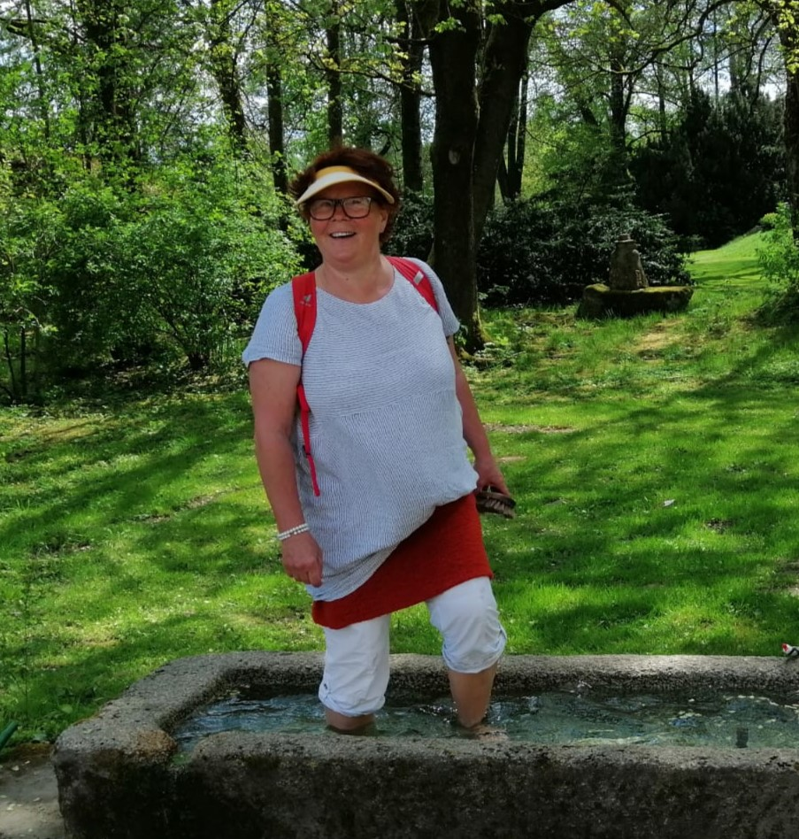

Hallo, mein Name ist Christine und ich biete als ausgebildete Fastenwanderleiterin regelmäßig Fastenwanderungen in der Gruppe an. Seit über 25 Jahren beschäftigen mich das Fasten und die Bewegung in der freien Natur. Die Kombination aus beidem, das Fastenwandern, ist für mich ein Urlaub für Körper, Geist und Seele. Losgelöst vom Alltag finden wir dank bewährter Strategien zu einem neuen Körpergefühl. Gerne begleite ich auch dich bei deinen ersten oder erneuten Erlebnissen.
